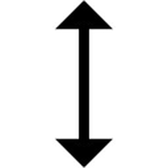
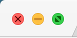
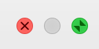

Typical Appearance
A resize event is characterized by a change in an element's dimensions.
In contrast with zoom, which is a related feature, resize changes the dimensional properties (length and width) of the element itself, rather than the scope at which the element is displayed on a screen. Examples of commonly resized elements include windows, icons, images, and text. However, for the purposes of evaluating typical appearances and behavior, we will consider the resize behavior of windows.
The arrow mouse cursor and resize buttons are the most common interface elements for changing the dimensions of elements.
Arrow Mouse Cursor
Diagonal
Horizontal
Vertical
Resize Button
Normal
Full
Dissabled
Typical Behavior
There are two categories of window resize behavior: manual and automatic.
Manual
The dimensions of a window can be manually resized by a drag and drop operation using the arrow resize cursor. Entering manual resize mode is visually represented by a change in the mouse cursor icon's apprearance from a pointer to an arrow. The orientation of the arrow, indicates the direction of resize, whether horizontal, veritical or diagonal.Once in the resize stage, the perimeter of the window can be manipulated.
Events
hovermouse downmouse release
The mouse event of hovering over the perimeter of
a window changes the cursor to an arrow which indicates the
allowed direction of resize. When the cursor is an arrow,
the user is in the resize state.
A mouse down event, once in the resize state,
begins manual resize. While in mouse down, changes
in the position of the mouse will manipulate the dimension of
the window. The dimension change is visually rendered in real time.
Upon arriving at the desired dimension in mouse down,
mouse release will set the window dimension and exit
the resize state.
Automatic
Automatic resize, is independent of a user-defined end dimension. Resize to full screen causes the window to fill the entire screen. Typically this is trigged by clicking a button, which toggles from full screen to non-full screen.
Events
hoverclick
Hovering over a window button menu reveals symbols
that indicate the different options for automatic resize
On click the window is resized to fit the entire window.
State Diagram

A resizeable element is in the standby state prior to resize.
Once the mouse starts dragging the edge or corner, the window enters
the resizing state. Once finished, the window reaches
the resized state.
Component in Action
The following gif represent only the resize functions within the Mac OSX platform that are common across different platforms (with minor stylistic differences). A closer look of resize in the OSX platform is explored in the "Platform-Specific Instances" section below.
Manual Resize
This is an example of manually resizing a window. Upon hovering over the perimeter of the window, the mouse cursor changes into a resize cursor, which indicates the direction of resize possible. Manual resize is permitted within the boundaries set by the platform, which default to the screen size. Overrides to the default max size on the macOSX platform are that the window can only be resized up to the menu bar at the top and up to the dock at the left.

Automatic Resize
This is an example of automatically resizing a window. Hovering over the menu buttons to the left of the window reveals symbols that define the resize options possible. When in default (non-fullscreen mode), upon clicking the green button, the window will resize to fill the dimensions of the screen. When in fullscreen mode, upon clicking the same button, the window will resize to its size prior to being in fullscreen.

Variants
The interface behaviors of resize can vary, depending on the element that is being resized
Slider Resize
Resize can be accomplished by a slider
Form Fill-In
When used for resizing, form fill-in is most commonly used for resizing text
Can also be found in other design programs like Maya.
Resize Text
Text can be resized across many platforms using a variety of methods, including form fill-in, menu selection, and direct manipulation sliders.

Split Screen
A function of the resize buttons is to allow for a full screen tiling of two windows to maximize the screen space use. In split screen mode, users can manually resize the windows by shifting the separation bar between the two windows. An in depth discussion of this interaction style is found here.
No Resize
Resize can't be accomplished using any methods.
Usually used for setting or installation windows.
Priority Metrics
Ben Shneiderman, in his book Designing the User Interace defines learnability, efficiency, errors, memorability, and satisfaction, as metrics by which the usability of a system can be measured. Resize is a common interface component, and in a perfect system, all five metrics are important. Nevertheless, if the resize function as a user interface component is evaluated against these metrics, learnability, efficiency, and memorability rise as the most important, whereas errors and satisfaction are less important.
Lernability
Errors
Efficiency
Memorability
Satisfaction
Learnability is an extremely important metric for effective resize interaction design. Resize is a very utilitarian interaction that is essential to GUI-based systems. Thus, resize needs to have a short learning curve, with interface elements and symbols that are largely self-explanatory. For example, users who are manually resizing windows for the first time should be able to use a simple guess and check heuristic to determine the position at which the mouse should be to achieve the intended resize direction.
Because resize is commonly implemented as direct manipulation, errors rank lower in the priority metrics. By nature, direct manipulation can be easily reversed, giving the user confidence that a mistake can be easily fixed. Therefore, errors are less of a concern in manual resize, since errors in resize do not carry large consequences.
Efficiency is a key metric for effective resize interaction design. Feedback is integral for direct manipulation resize, and any delay in recieving the visual feedback of element resize will affect the user's productivity.
Because learnability is such a high priority, memorability is also an important usability metric. The symbols and colors of resize interface elements should allow for the user to easily identify the functionality of these elements, from prior knowledge of interfacing with the element.
Because resize is utilitarian in nature, satisfaction is lower on the priority list. However, it is important to note that as a subset of direct manipulation, good resize user interfaces are integral to the satisfaction of the user. For example, if the feedback is delayed in manual resize of a window, the user will quickly become frustrated by the disconnect between the dimension of the window as displayed on the screen, and the user's mental model of how large or small the window should actually be.
Key Characteristics
Direct Manipulation Interaction Style
Direct manipulation is an interaction style in which the changes that a user makes to an object are incrementable, reversible, and immediately represented on the screen. Manual resize is a classic example of direct manipulation. When a user resizes an element's dimensions manually, the impact of the change is visible immediately and continually on the user's screen. Thus, key characteristics of effective manual resize will be discussed in the context its classification as a direct manipulation implementation. Well implemented direct manipulation allows the user to achieve mastery of the interface, competence in performing tasks, and enjoyment in using the interface. The following principles and guidelines are relevant for informing best practices for resize interfaces.
- Principle of Feedback
- Principle of Transparency
- Mental Model
Feedback is a defining interaction design principle of effective direct manipulation. Feedback in manual resize is characterized by a change in element's size on the screen in real time, as the user is resizing. Feedback time must be sufficiently fast, as any latency in the response will cause a delay in the user action - visual response feedback loop.
In effective direct manipulation, the interaction tool itself becomes transparent to the user. As a direct manipulation interface, resize "tools" disappear as the user interaction with the element being resized through the mouse cursor is understood as an extension of a user's tactile functions, emphasizing the "direct"-ness of direct manipulation.
Overall, effective interaction design must allow for the user's mental
model derived from the system image to correspond with the designer's
mental model. Assisting this process in manual resize is the parallels
that digifal direct manipulation has with how users interact with the
physical world. Physically resizing a moldable substance, such as clay
or elastic is mirrored in the "grasping" mouse down and
"stretching" resize state of a window or element on a screen.
Platform Specific Instances
macOS Human Interface Guidelines
In this section, the resize component implmentation in the Mac OSX platform will be specifically evaulated. Specific examples of resize implementations will be provided, as well as a discussion of how Apple's interaction design principles have influenced these specific resize implmentations. "macOS Human Interface Guidelines" is a document that provides insight into the theories, principles, and guidelines that Apple Developers use to design the macOS interface. One guideline that it states specifically for resize, is that standard document windows should have transient resize controls--controls that disappear when not needed. The interface guidelines also considers the principle of direct manipulation as a way of affirming the user's mental model of a task, because it can feel more natural than what they define as "explicit tasks".

Automatic Resize
This example shows automatic resize in the Notes Application Window. Hovering over the colored buttons reveals the resize symbol, and upon click of the green fullscreen button, the window fills the entire screen. The fullscreen symbol is indicative of the function it triggers, because of the arrows that are pointing outwards. In fullscreen mode, the entire menu disappears, reflecting the macOS guideline of transient controls. When the user wants to return to a non-fullscreen mode, the resize button is accessed by displaying the menu bar, which returns to the screen when the mouse is at the top of the screen. Hovering over the button reveals the resize symbol, which is now arrows that are pointing inward, indicating that the window will now shrink upon click.

Manual Resize
This example shows manual resize in the Notes Application Window. Hovering over the permeter of the window changes the mouse cursor from a pointer to an arrow, which is indicative of the direction of resize possible at that position. Dragging the edge of the window at this point allows the user to explore different window dimensions, befre setting the new dimension on mouse release. An interesting characteristic to notice is that resizing the Notes window will cause text wrap to occur, bounded by the dimensions of the Notes Window. Also, observe how resize causes the menu bar to add/drop components on stretch/shrink, respectively. Thus, for some applications in OSX, resize not only acts on the window size itself, but on a network of interconnected components that will also react to the resize operation. In this case, as a consequence of the resize, the menu bar automatically reformats as the window is resized. Furthermore, the sidebar hides automattically as its parent window is resizedits there's more room for content.
Folder Description Resize
Add info here
Dialog Resize
A dialog is a type of window that’s designed to elicit a response from the user. Many dialogs—the Print dialog, for example—let the user provide several responses at once. When a dialog permits resizing, elements that can scale with the dialog do so accordingly to maintain consistency. In general, views like boxes, tab views, and tables, expand to fill the dialog. Other elements that aren’t generally resized, like buttons, checkboxes, and segmented controls remain the same size and are anchored to the sides (or the center) of the dialog.
Dock Resize
Direct manipulation occurs at a higher level of abstraction in this example of a slider that accomplishes resizing the dock and its icons by means of a resize slider. The user is manipulating the position of the slider to control the size of the dock. Although the user is a acting on the slider interface element, this is still a form of direct manipulation because the impact of the resize action is immediately visable via the changing size of the dock on the screen. Also, note that in this example, the slider resizes a group of similar elements at the same time.
Split Windows
A split view manages the presentation of two or more panes of content. Each pane can contain any variety of elements, including buttons, tables, column views, text fields, and even other split views.
The panes of a split are separated by a divider that can typically be dragged to resize the panes. Each pane can have a minimum and maximum size, which affects how much it can be resized. Many apps let the user hide specific panes on request.
When a user whans to split a screen, the user should hover over the colored buttons that reveals the resize symbol, and upon click and holding of the green fullscreen button and hold it along the edge of the screen until a box appears showing the new dimensions of the window in light bleu. At this point the user can release the window, which will fill the projected box. At this poing, the rest of the windows will automatically be shown on the remainding half of the screen, indicating the user that he/she should select another window to cover the remaining space. These actions requires direct manipulation of the window in the action of dragging the window to its new location, however the projected box takes over the resizing process once the window has been manipulated into the correct location
When the user wishes make a window take up more than 1/2 of the the screen they can drag the window by its divider and drag it along the other window, as if it was "pushing" it. At this point the user can release the window, which will remain in the desired size. This action requires direct manipulation of the window in the action of dragging the divider to its new location.
Minimum resize for different apps
Add info here
Taking the Dock into account
The position of the Dock has to be taken into account when resizing windows. It’s difficult to drag or resize a portion of a window that’s positioned behind the Dock or too close to the edge of the screen that hides the Dock. For this reason once the user reaches the limits of the Dock when resizing, the application should stop allowing the userfrom resizing it any longer. Feedback is provided to the user by changing the doubled arrow to a single arrow to indicate that now the window can only be resized in one direction (opposite to the position towards the doc) as illustrated by the video.

Windows that do not support resize
Some windows, such as "System Preferences" don't have resize properties. This is because the contents within the windows are static and cannot be changed. The fact that the OSX System Preferences window cannot resize is conveyed by the observation that on hover, the resize arrow cursor and the resize button did not respond. The absence of feedback, is feedback itself, telling the user that the resize operation is not possible on the System Preferences window.
Word Text Resize
The TextEdit application on the Mac OSX, supports text resize via the fonts menu. In this menu, text can be resized in three different ways: font size form fill-in, selecting the font size from a menu, and using the font size slider. The font size slider is a form of direct manipulation, however font size form fill-in and menu takes in a discrete font size input and outputs the resized text at the specified font size. Typical use cases for the form fill-in menu would be if the user need to specify a particular font size, whereas the slider may be used if the user wanted to experiment with quickly viewing the text at different sizes. TextEdit offers three different methods for text resize so that the user can manipulate the text size in a way that makes sense for the user's application.
Windows 10 Resizing Instances and Guidelines
This section will evaluate the implementation of the resize component in the Windows 10 platform. In addition to providing specific examples of resizing, this section will discuss the Windows Guidelines and whether they are accurately reflected in the provided examples. It is important to note that the Windows Guidelines is a huge collection of documentation, and because this only a handful apply directly to resizing. Some of the specific sections of the Windows Guidelines that will be referenced are: Windows Window Management, Windows Dialogue Boxes, and Windows Common Dialogues. Some of the main concepts that can be pulled from these guideline sections are:
-
Minimum effective window resolution is 800x600 pixels.
-
Optimal resolution for an effective resizable window is 1024x768 pixels.
-
Resizable windows no longer require the resize glyph ( ) in the lower right corner of the window.
-
The glyph requires a status bar in order to be displayed.
-
Resizable window boarders and resize pointers are more effective at conveying a window is resizable than the glyph.
-
-
All windows should have a minimize button ( ) to reduce a window to a taskbar button.
-
All windows should have a maximize/restore down button, unless the window isn’t resizable.
-
The maximize button ( ) should make the window full screen, or maximum needed size.
-
The restore ( ) down button should restore the window to its previous size.
-
-
Use resizable windows whenever possible to avoid scroll bars and truncated data.
-
A minimum window size should be set if the window will no longer be usable at certain dimensions.
Building on these priciples, here are some specific examples of resizing in Windows 10 with a breif descripton and reflection on their adherence to the Windows Guidelines.
Automatic Resize
In this example the maximize, restore down, and minimize buttons are used to manipulate the dimensions of a Google Chrome window. When each of these buttons are clicked, they perform the action specified in the Windows Guidelines. Also, complying with Windows guidelines, whenever the cursor hovers over on of these buttons a description box appears with the button's name. This example illustrates automatic resizing because the user doesn't have to explicitly specify the new dimensions of the window, but still knows what dimensions the window will have.
Manual Resize
In contrast to the last example, automatic resizing, manual resizing requires the user to explicitly specify the windows size. While this may be accomplished through the use of scroll bars, the most common example of manual resizing in Windows 10 involves clicking and dragging the window's boarders to the desired width or height. The window in this example complies with Windows guidelines statement that the resize glyph isn't required, and instead makes the manual resize functionality apparent through the use of resize pointers that replace the cursor when it is over the window's bottom and right boarders, with arrows pointing in the directions of possible change.
Split Screen Resize
This example of resizing in Windows 10 illustrates both automatic and manual resizing. For example, when the user wishes make a window take up 1/2 or 1/4 of the screen they drag the window by its top boarder and hold it along the edge of the screen until a box appears showing the new dimensions of the window. At this point the user can release the window, which will fill the projected box. As mentioned earlier, this action requires direct manipulation of the window in the action of dragging the window to its new location, however the projected box takes over the resizing process once the window has been manipulated into the correct location.
Form Fill-in Resize
This example uses Word to illustrate the resizing of text using a form fill-in. While this is a cross platform program, it illustrates the same mechanic that is present in other Windows 10 programs for resizing windows and objects. This type of resizing requires the user to choose or input their desired size into the form. Once the form has been submitted the size is updated, and the user is free to input a new size. While this process isn't exactly direct manipulation it still gives users the ability to quickly change window dimensions, and in some instances be far more explicit in the new dimensions.
No Resize
In the example above, the System Properties settings window doesn't allow for any resizing. Any attempts to use the window boarders doesn't work, and the resize pointers aren't visible. It seems that this breaks the Windows guideline that says to use resizable windows whenever possible. However, this example adheres to the Windows guidelines because the window doesn't require any resizing because the content of the window won't change, and it is small enough to work on all screens. Additionally, this is a Guideline compliant non-resizable window because it doesn't include nonfunctional minimize or maximize/restore down buttons.
Windows 10 Resizing Instances and Guidelines
Credits & References
Resize Arrow Diagonal Image{kind=link}
Resize Arrow Vertical Image
{kind=link}
Resize Arrow Horizontal Image
{kind=link}
Mouse Cursor Image
{kind=link}
Mozilla Firefox Documentation
JQuery Documentation
Kendo UI Documentation
macOS Human Interface Guidelines
Windows Guidelines
Windows Window Management Guidelines
Windows Dialogue Boxes Guidelines
Windows Common Dialogues Guidelines